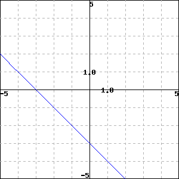

Checkpoint 1.1.1. Find the slope of the line between the points \((2, 8)\) and \((-2, 12)\) The slope is . Answer.\(-1\) Solution.The slope is \(\dfrac{12 - 8}{-2-2} = \dfrac{4}{-4} = {-1}\) Make Interactive
Checkpoint 1.1.2. Find the slope of the line between the points \((12, 5)\) and \((13, 5)\) The slope is . Answer.\(0\) Solution.The slope is \(\dfrac{5 - 5}{13-12} = \dfrac{0}{1} = {0}\) Make Interactive
Checkpoint 1.1.3. Find the slope of the line graphed below.  The slope is . Answer.\(-1\) Make Interactive